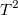

内容 |
このレポートは交差確認にチェックを付けた時のみ確認できます。0から指定した最大数までの中で抽出した因子に対するフィットモデルのサマリー統計を表示します。15以上の独立変数がある場合、抽出する因子の最大数を15に設定します。それ以外の場合は元の独立変数の数まで選択できます。このレポートセクションには1つの表、交差確認サマリーとPRESSプロットが含まれています。これらの結果は最も興味のある因子の数を結果として提示します。交差確認を行う際には多くの手法、例えばK-分割交差検証(K-fold cross-validation)、2分割交差検証、繰返しランダムサブサンプリング検証、Leave-one-out交差検証があります。しかし、部分交差確認については通常Leave-one-out交差検証を使います。これは1つの観測をテスト事例データとし、残りのデータをトレーニングデータとして扱います。全てのデータがテスト事例データとして実行されるまで繰り返されます。
このテーブルではPRESSのルート平均はそのまま、PRESSの平方根の平均で、これは推定残差の二乗和となります。この表から、PRESSのルート平均は一般的に最小平方根の平均に減少し、ある一定の値まで増加します。最小ルート平均に到達すると、その値に到達するまでに使用した因子数は、いわゆる最適な因子数といえます。実際には、最も重要な情報は表の下のメモ欄に記されています。
このプロットはどの様に最小ルート平均に到達したのかを示します。
このセクションは分散のパーセントという表を1つと因子寄与プロットという2つのプロットから成り立ちます。
この表は、XとYの両方に対する、分散のパーセントと累積の因子寄与パーセントを示しています。Xの効果とYの応答、どちらに対してもパーセントの値が大きくなればより多くの因子が関係している事が分かります。
これらのプロットはXの効果(％)の因子寄与とYの応答(％)の因子寄与をそれぞれ示します。
それぞれのYの応答に対して、対応するプロットは元のデータを元にしたXの係数を示します。
このプロットは、それぞれの説明変数に対して平均分散を応答として設定した場合を示します。このVIP値は変数重要度を計測します。この場合、0.8と等しいリファレンス線がある事が分かります。変数のVIP値が0.8より大きいと、その変数は「重要」とみなされます。
ローディングプロットは元の値とサブスペースの次元の関係性を示しています。変数間の関係を読み取るのに使用されます。
スコアプロットはデータをサブスペースに投影するものです。観測値間の関係を読み取るのに使用されます。
それぞれのYの応答に対して、線形フィットプロット、残差散布図、パーセンタイルプロットがあります。これらのプロットはモデルの診断に使用します。
距離グラフはi番目のXとYの距離を測るモデルを示します。
van der Voet

統計は、抽出したさまざまな因子が、最適なモデルからどれだけ有意に異なるかを調べるために検定を行います。T二乗プロットは、この統計量の散布図を示します。